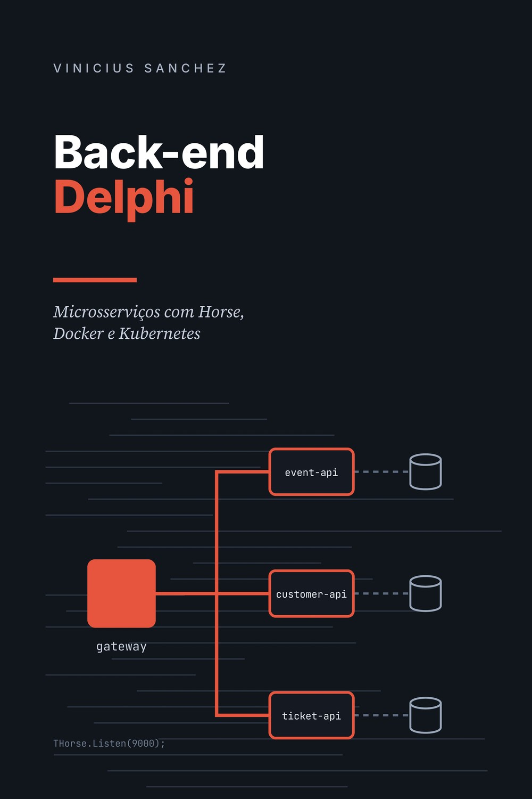

Back-end Delphi
Microsserviços com Horse, Docker e Kubernetes
Do primeiro THorse.Get a nove cópias rodando num cluster Kubernetes. Uma plataforma completa de venda de ingressos, construída capítulo a capítulo, com o Delphi que você já conhece.
Versão impressa, 549 páginas · vendido pela UICLAP

"Delphi é para sistema desktop."
Você já ouviu essa frase. Às vezes de um colega, às vezes da própria empresa, quando chega a hora de construir uma API e alguém decide que "essa parte vai ser feita em outra linguagem".
Enquanto isso, é no Delphi que estão as regras de negócio mais importantes da casa. Este livro mostra, passo a passo, como construir um back-end moderno com ele: APIs REST, microsserviços, contêineres e Kubernetes, sem trocar de linguagem e sem pular as partes difíceis.
Uma plataforma de verdade, não exemplos soltos
Do primeiro ao último capítulo, você constrói um único sistema: uma plataforma de venda de ingressos para eventos. Cada capítulo acrescenta uma peça, e cada peça é testada pelas seguintes.
Três serviços, três bancos
Cada serviço é dono dos seus dados e conversa com os outros por HTTP, com tempo limite, nova tentativa e modo degradado.
Uma porta de entrada
Um API Gateway, também em Delphi, com o Horse: roteamento, identificador de requisição, CORS e limite de tentativas de login.
Pronta para produção
Compilada para Linux, empacotada em Docker e rodando com várias cópias no Kubernetes, com logs, métricas e Prometheus.
Nunca vender o mesmo ingresso duas vezes
Abertura de vendas de um show concorrido: milhares de pessoas clicando no mesmo segundo. Nos testes manuais, uma requisição de cada vez, tudo funciona. Às 10h da segunda-feira, o sistema vende 11 ingressos de um lote de 10.
O livro mostra por que isso acontece, como resolver com um único comando no banco e, mais adiante, como provar que a solução aguenta três cópias do serviço disputando o mesmo estoque.
Números de execuções reais
Todo o código do livro foi compilado e executado durante a escrita. Os resultados que aparecem nas seções "Testando", como este ao lado, vêm dessas execuções.
// Verificar e baixar o estoque em um único comando. LQuery := NewQuery( 'update batch_inventory' + ' set sold = sold + :quantity, updated_at = :now' + ' where id = :id' + ' and sold + :quantity <= quantity' + ' and :now >= sales_start and :now < sales_end' + ' returning price, event_id');
lote 2 com 20 ingressos; 60 compradores ao mesmo tempo status 201: 20 status 409: 40 tempo total: 1429 ms
Escrito para quem programa em Delphi
Código que roda
Cada exemplo foi compilado no Delphi 13 e executado no Windows, no Linux, no Docker e num cluster Kubernetes.
Problemas reais, no texto
O GUID que não era aleatório no Linux, o pool de conexões que acabou com três cópias, a imagem que "mentiu" no cluster: aconteceram, e o livro mostra como foram resolvidos.
Comece de qualquer ponto
O repositório traz o projeto exatamente como fica ao final de cada capítulo. Perdeu-se? Compare com a pasta e siga em frente.
A linguagem você já sabe
O livro não explica Delphi. Explica, do zero, tudo o que é de back-end: HTTP, REST, JSON, concorrência, contêineres e observabilidade.
O ecossistema de hoje
Horse, Boss, Jhonson, GBSwagger e RESTRequest4Delphi, com FireDAC e PostgreSQL. Sem ORM, sem mágica escondida.
E o seu sistema legado?
Como levar um sistema cliente-servidor para a arquitetura nova aos poucos, sem parar a operação e sem reescrever tudo de uma vez.
Do primeiro endpoint à produção
- 1Introdução
- 2Preparando o ambiente
- 3Primeiros passos com o Horse
- 4Arquitetura da plataforma
- 5Acesso a dados com FireDAC
- 6Serviço de eventos
- 7Serviço de participantes
- 8Serviço de ingressos
- 9Relatórios de vendas e ocupação
- 10Validação e tratamento de erros
- 11Documentando a API com Swagger
- 12Comunicação entre serviços
- 13Autenticação e autorização com JWT
- 14Configuração e segredos
- 15Testes automatizados
- 16API Gateway
- 17Rodando no Linux
- 18Docker
- 19Conceitos de Kubernetes
- 20A plataforma inteira no Kubernetes
- 21Observabilidade: logs, métricas e rastreamento
- 22Migrando um sistema legado aos poucos
- 23Próximos passos
Você vai aproveitar este livro se…
É para você
- Você já programa em Delphi: formulários, units, acesso a banco.
- Nunca construiu uma API, ou construiu e quer ir além do básico.
- Precisa levar regras de negócio que já existem para um aplicativo, um portal ou uma integração.
- Quer entender Docker e Kubernetes a partir de um sistema seu, e não de um exemplo pronto.
Talvez não seja
- Se você procura um curso da linguagem Delphi: o livro parte do princípio de que você já a conhece.
- Se você quer uma referência de bolso de uma biblioteca específica: aqui o foco é construir um sistema inteiro.
Antes de comprar
Qual versão do Delphi eu preciso?
Todo o código foi escrito e testado no Delphi 13. Os capítulos 1 a 4 funcionam em qualquer edição. A compilação para Linux, a partir do capítulo 17, exige as edições Enterprise ou Architect. Para o acesso ao PostgreSQL com o FireDAC, a partir do capítulo 5, confira na matriz de recursos da Embarcadero o que a sua edição inclui.
Preciso saber Docker ou Kubernetes?
Não. Tudo o que é de back-end é explicado do zero, no momento em que aparece: HTTP, REST, JSON, concorrência, contêineres e Kubernetes.
Onde fica o código-fonte?
No GitHub, com uma pasta por capítulo e licença MIT. Cada pasta traz o projeto como ele fica ao final do capítulo, um arquivo com os comandos do capítulo prontos para copiar e um roteiro que testa tudo de uma vez. Você pode usar o código livremente nos seus projetos.
Serve para quem usa Lazarus?
Os conceitos sim: o Horse também roda no Lazarus, e rotas, middlewares e arquitetura são os mesmos. Os exemplos, porém, usam o FireDAC e foram testados apenas no Delphi.
Qual o formato do livro?
Livro impresso, no formato 14 × 21 cm, com 549 páginas, em português. A venda é feita pela loja da UICLAP, que imprime e envia o livro.